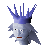

Death Plateau (underground)
Underground area at 2865, 9992 · Kingdom of Asgarnia, Underground
Open on the world map → Open in knowledge graph → Surface: Death Plateau
NPCs
| NPC | Level | Spawns | Notable drops |
|---|---|---|---|
 Ice Queen | 111 | 1 | |
| 61 | 4 | ||
| 57 | 3 | Coins, Nature rune, Herb drop table, Chaos rune | |
| 57 | 6 | Coins, Nature rune, Herb drop table, Chaos rune | |
| 49 | 1 | Coins, Iron 2h sword, Black kiteshield, Steel axe |